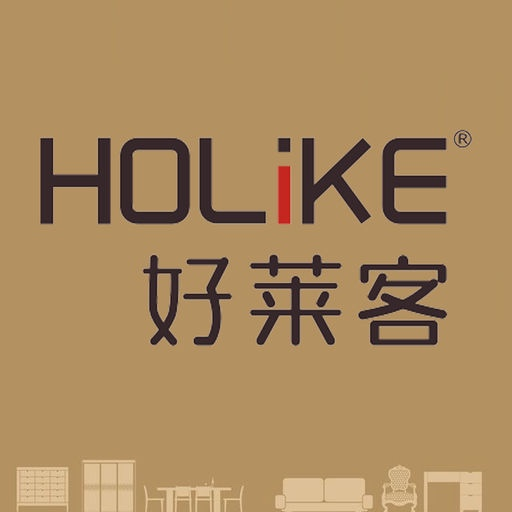

-
- Basic info. 基本信息
- 个人信息: 列柳虹 / 女 / 24岁
- 英语水平: CET-4
-
- Experience. 项目与工作经验
京金联（2015.03 - 至今）
-
测试专员，软件项目管理
根据产品稿与开发工程师商讨开发功能、细节，把握功能点的开发时间周期
根据产品稿的预期值对iPhone，Andriod 等移动端写出相关的测试用例以及进行黑/白盒测试
根据产品稿的预期值各种API 写出相关的测试用例以及进行黑/白盒测试，压力测试
-
成就
在负责移动端测试之后，一直以5% 的bug 出现几率保持软件的稳定性
通过压测工具进行相关的web API 压测，配合开发工程师找出相应程序中的性能瓶颈
广州博胜科技有限公司
-
测试专员
根据产品稿的预期值对iPhone，Andriod 等移动端写出相关的测试用例以及进行黑/白盒测试
根据产品稿的预期值各种API 写出相关的测试用例以及进行黑/白盒测试，压力测试
-
项目名称：更懂宝宝
项目介绍：该项目是与百润公司合作的一个婴幼儿B2C商城项目,该项目中本人参与 了API(PHP)开发,数据库的搭建等后端开发工作,全职负责客户端(iOS+H5)研发。
项目负责：
1：手机客户端/Html5 活动页面进行黑/白盒测试。
2：少量Web API黑/白盒测试以及压测
3：编写测试Cases,测试报告 -
项目名称：好莱客 HD
项目介绍：该项目属于家居建材项目，主要以展示为主（iPad端）。应用中图片，动画形式展示好莱客公司最新的产品和客户的装修产品，应用中能对客户的订单查阅，客户在线订购，在线预约。
项目负责：
1：对Pad客户端/Html5 活动页面进行黑/白盒测试。

2：少量 Web API黑/白盒测试以及压测
3：编写测试Cases,测试报告 -
项目名称：席梦思
项目介绍：该项目主要是为香港席梦思公司定制一套属于该公司的APP，应用中包括给中婚宴环节的讲解，新婚购买东西的流水账本和集成分享功能。
项目负责：
1：对手机客户端功能点测试。
2：Web API黑/白盒测试
3：编写测试Cases,测试报告 -
成就
该公司是一家软件服务型公司，既有自己产品也有相应的软件开发服务，在职期间主要是负责公司外包产品的测试，通过黑白盒测试来提高软件的交付质量以及本公司的产品质量。
个人兴趣爱好
-
喜欢新事物，喜欢互联网产品。
喜欢电影、小说、漫画、游戏、话剧、美剧等
喜欢研究心理学，看有关心理类的书籍

-
- Skill. 技能清单
Programming Language
-
HTML/CSS
能够编写语义化的 HTML，模块化的 CSS，完成较简单的布局
-
Python
能够阅读，编写一定量的Python。
测试工具
-
apache bench
熟悉ab 的基本用法，如：设置压测报告，压测条件，压测指标。
-
Fidder/Charle
熟悉Fidder/Charle的基本抓包用法
-
黑盒测试
能够根据产品的需求设置软件中功能的期望值以，数据的期望值生成测试报告。
-
白盒测试
能够根据产品的需求设定相对的逻辑步骤，以及模拟用户设定逻辑步骤进行白盒测试。生成测试报告
-
Visio
了解Visio 的基本用法，能够流畅使用
其他
-
为人诚实，友善随和，易于人相处
十分有耐心，责任心强，工作积极乐观